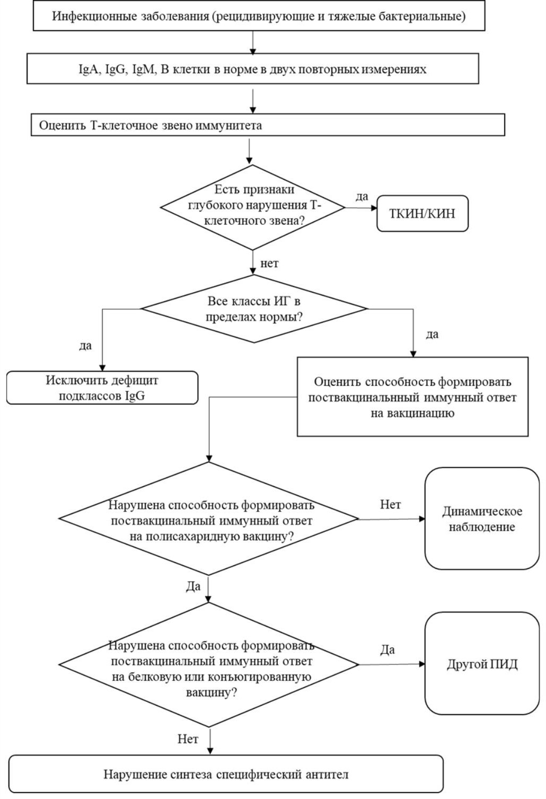

Сверка с PDF рубрикатора выполняется…
Первичные иммунодефициты с недостаточностью синтеза антител
Клинические рекомендации от 26.05.2022 · взрослые и дети
Основные положения
- Первичные иммунодефициты (ПИД) с преимущественной недостаточностью синтеза антител представляют собой генетически обусловленные заболевания с нарушением образования антител в ответ на инфекцию или вакцинацию. Это самая частая группа ПИД.
- Общим признаком являются рецидивирующие инфекции синопульмонального тракта, торпидные к стандартной антибиотикотерапии, с повышенной восприимчивостью к инкапсулированным бактериям.
- Тяжёлые хронические или рецидивирующие синуситы и отиты, торпидные к стандартной терапии, служат показанием к скринингу на ПИД. Для верификации определяют IgA, IgG, IgM в крови.
- Гипогаммаглобулинемией считается IgG ниже 2 стандартных отклонений от возрастной нормы у детей и ниже 4,5 г/л у взрослых. Изменения подтверждают как минимум двумя исследованиями.
- При агаммаглобулинемии, общей вариабельной иммунной недостаточности (ОВИН) и гипер-IgM-синдроме регулярную заместительную терапию иммуноглобулином человека нормальным начинают незамедлительно после установления диагноза. Целевой претрансфузионный IgG не ниже 7 г/л.
- При ОВИН, агаммаглобулинемии и гипер-IgM-синдроме живые вакцины не рекомендуются.
Клиническая картина и классификация
Определения
Первичные иммунодефициты (ПИД) — группа врождённых заболеваний иммунной системы, насчитывающая более 450 нозологий, связанных с утратой, уменьшением или неправильным функционированием одного или нескольких её звеньев.
Гипогаммаглобулинемия — снижение уровня IgG в крови ниже 2 стандартных отклонений от возрастной нормы у детей и ниже 4,5 г/л у взрослых.
Агаммаглобулинемия — снижение уровня IgG ниже 1,0 г/л в сочетании с IgM ниже 0,2 г/л и IgA ниже 0,1 г/л при уровне периферических CD19+ В-клеток ниже 2%.
Претрансфузионный уровень IgG — уровень IgG, исследованный в день перед введением иммуноглобулина человека нормального (наиболее низкий его показатель в течение месяца).
ПИД с преимущественным нарушением синтеза антител — генетически детерминированные заболевания с нарушением антителообразования в ответ на инфекцию или вакцинацию: от снижения всех классов иммуноглобулинов и отсутствия В-лимфоцитов до селективного дефицита антител.
- общая вариабельная иммунная недостаточность (ОВИН);
- Х-сцепленная агаммаглобулинемия (болезнь Брутона) и аутосомно-рецессивные агаммаглобулинемии;
- селективный дефицит IgA;
- дефицит подклассов IgG;
- нарушение синтеза специфических антител;
- транзиторная младенческая гипогаммаглобулинемия.
Этиология и эпидемиология
В основе лежит нарушение дифференцировки В-лимфоцитов в костном мозге или в периферических лимфоидных органах. Около 90% наследственных агаммаглобулинемий составляет болезнь Брутона (ген Btk на Х-хромосоме), поэтому болеют лица мужского пола. Генетическую основу ОВИН в большинстве случаев установить не удаётся.
ПИД с нарушением синтеза антител составляют более 50% всех ПИД. Распространённость ОВИН — от 1:10 000 до 1:50 000, агаммаглобулинемии — от 1:100 000 до 1:200 000, селективного дефицита IgA — от 1:142 до 1:18 000 (у большинства бессимптомно).
Клиническая картина
Объединяющий признак — рецидивирующие инфекции преимущественно синопульмонального тракта с повышенной восприимчивостью к инкапсулированным бактериям. Характерна торпидность к стандартным схемам антибиотикотерапии при отсутствии предрасполагающих факторов.
Тяжёлые повторные инфекции приводят к бронхоэктазам и пневмосклерозу. На втором месте после синопульмональных — инфекционные поражения ЖКТ.
- дебют, как правило, от 6 месяцев до 1 года, после истощения материнских антител;
- гипоплазия миндалин и лимфатических узлов;
- хронические синуситы с частыми обострениями;
- бронхоэктазы после повторных пневмоний;
- нейросенсорная тугоухость как следствие перенесённых гнойных средних отитов;
- деформации суставов после артритов;
- нейтропения в дебюте;
- отставание в физическом развитии.
- два пика дебюта: 2–5 лет и 18–25 лет;
- инфекции, сходные с болезнью Брутона;
- лимфопролиферация: лимфаденопатия (около 40%), спленомегалия (до 60%), гепатомегалия (до 15%).
Одно из самых тяжёлых неинфекционных осложнений ОВИН — интерстициальная болезнь лёгких; характерны неказеозные саркоидоподобные гранулёмы в лёгких, лимфоузлах, селезёнке.
- поражение ЖКТ: диарея более чем у 20%, мальабсорбция; целиакия- и кроно-подобное поражение, НЯК, нодулярная лимфоидная гиперплазия;
- иммунные цитопении (10–29%), нередко первый симптом;
- повышенный риск злокачественных новообразований, особенно неходжкинских лимфом.
Селективный дефицит IgA у двух третей пациентов протекает бессимптомно; при симптомах характерны не столько тяжёлые, сколько частые инфекции, а также заболевания ЖКТ, аутоиммунные и аллергические болезни. Тяжелее течёт сочетание с дефицитом подклассов IgG.
При дефиците подклассов IgG и специфических антител более характерны синуситы, отиты, бронхиты; пневмонии и менингиты встречаются реже, отмечается склонность к аллергическим заболеваниям.
Транзиторная младенческая гипогаммаглобулинемия — удлинение физиологического периода гипогаммаглобулинемии (обычно до 3–6 месяцев); может протекать бессимптомно или с частыми инфекциями верхних и нижних дыхательных путей.
Дифференциальная диагностика с саркоидозом по КТ: при ОВИН чаще поражаются нижние доли, узелки крупные, расположены хаотично, характерны бронхоэктазы; при саркоидозе узелки мелкие, перилимфатические, с лимфаденопатией корней лёгких, бронхоэктазов, как правило, нет.
Диагностика
Диагностические критерии ESID
Диагностические критерии ESID форм ПИД с недостаточностью синтеза антител таблица 1 КР
| Форма ПИД | Критерии |
|---|---|
| ОВИН |
|
| Х-сцепленная агаммаглобулинемия |
|
| Гипер-IgM-синдром |
|
| Нарушение синтеза специфических антител |
|
| Дефицит подклассов IgG |
|
| Дефицит IgA с дефицитом подклассов IgG |
|
| Селективный дефицит IgA |
|
| Транзиторная гипогаммаглобулинемия |
|
Всем пациентам с подозрением на ПИД проводят дифференциальную диагностику с другими формами ПИД.
При снижении иммуноглобулинов исключают вторичную гипогаммаглобулинемию: она встречается в 30 раз чаще, чем ПИД, не всегда сопровождается тяжёлыми инфекциями и часто транзиторна.
У всех пациентов с гипогаммаглобулинемией исключают другие заболевания и состояния, способные привести к неконтролируемому инфекционному процессу.
Жалобы и анамнез
- отягощённый семейный анамнез по иммунологическим заболеваниям;
- тяжёлые хронические или рецидивирующие инфекции, торпидные к стандартной терапии: синуситы, отиты, бронхиты, пневмонии, артриты, кишечные инфекции, менингиты, сепсис, кожные инфекции;
- стойкий диарейный синдром, в том числе с мальабсорбцией;
- патологическая лимфопролиферация: стойкая лимфаденопатия, спленомегалия, лимфоцитарная инфильтрация органов;
- аутоиммунные проявления, прежде всего цитопении;
- гранулематозное воспаление, прежде всего саркоидоподобные изменения в лёгких;
- бронхоэктазы, особенно у молодых;
- злокачественные новообразования лимфоидной ткани.
Особую настороженность вызывают пациенты с несколькими из этих симптомов.
Тщательно собирают семейный анамнез: смерть родственника в младенчестве или от инфекции, родственники с хроническими или атипичными инфекциями, цитопениями. При Х-сцепленной агаммаглобулинемии семейный анамнез прослеживается почти у половины пациентов.
Общий осмотр и пальпация
Всем пациентам с подозрением на ПИД проводится полный физикальный осмотр.
Оценивают- отставание в физическом развитии, снижение массы тела при энтеропатии;
- лимфаденопатия (ОВИН) или гипоплазия лимфоузлов без регионарного увеличения при активной инфекции (агаммаглобулинемия);
- гепато- и спленомегалия;
- гипопротеинемические отёки;
- «барабанные палочки», «часовые стёкла», деформация грудной клетки и суставов;
- кожные сыпи, фурункулы, абсцессы, рубцы.
Иммуноглобулины A, G, M и белковые фракции
Общий белок и белковые фракции (электрофорез) — для выявления изменения гамма-глобулинов.
Всем пациентам с клиническими признаками ПИД определяют IgA, IgG, IgM в крови.
- гипогаммаглобулинемия: IgG ниже 2 стандартных отклонений от возрастной нормы у детей, ниже 4,5 г/л у взрослых;
- агаммаглобулинемия: IgG ниже 1,0 г/л, IgM ниже 0,2 г/л, IgA ниже 0,1 г/л при CD19+ В-клетках менее 2%.
Изменения подтверждают как минимум двумя исследованиями.
Субпопуляции лимфоцитов
При гипо- и агаммаглобулинемии определяют CD19+ лимфоциты — для уточнения формы ПИД.
При гипо- и агаммаглобулинемии определяют CD3+, CD4+, CD8+, CD16+/56+ лимфоциты — для исключения комбинированных ПИД.
Подтверждение ОВИН и дефицита специфических антител
- изогемагглютинины в крови;
- переключённые В-клетки (CD19+CD27+IgD−);
- при пограничных или нормальных иммуноглобулинах — антитела IgG к двум и более агентам до и после вакцинации.
- непривитым проводят вакцинацию инактивированными вакцинами;
- ответ на полисахаридные вакцины оценивают не ранее 2 лет;
- оценку проводят до начала заместительной терапии;
- значимо отсутствие нарастания титра в 2–4 раза через 4–6 недель, при сомнительном результате — повтор через 4 недели.
При подозрении на нарушение синтеза специфических антител определяют IgG к дифтерийному и столбнячному анатоксинам, менингококку, гемофильной палочке до и после вакцинации.
При подозрении на дефицит подклассов IgG (изолированный или с дефицитом IgA) исследуют подклассы IgG.
Молекулярно-генетическое исследование
- мужчины с агаммаглобулинемией и В-клетками менее 2%: исследуют мутации гена Btk;
- женщины, а также мужчины без мутации Btk при В-клетках менее 2%: исследуют гены других агаммаглобулинемий;
- при неустановленной мутации: панели генов (NGS), экзомное или геномное секвенирование.
Исследования при установленном диагнозе
Вирусные и другие инфекции у пациентов с ПИД диагностируют методом ПЦР: серологические методы неинформативны.
- общий анализ крови с лейкоцитарной формулой и СОЭ;
- общий анализ мочи;
- биохимический анализ крови: белок и фракции, мочевина, креатинин, АСТ, АЛТ, ГГТП, ЛДГ, билирубин, глюкоза.
На заместительной терапии претрансфузионный IgG определяют ежемесячно до достижения целевого уровня, затем не реже 1 раза в 6 месяцев.
При инфекционных осложнениях верифицируют возбудителя.
Компьютерная томография органов грудной полости
Всем пациентам при установлении диагноза показана КТ органов грудной полости; при ОВИН её повторяют не реже 1 раза в год, поскольку интерстициальная болезнь лёгких может долго протекать бессимптомно.
УЗИ лимфатических узлов и органов брюшной полости
При ОВИН УЗИ доступных лимфоузлов и органов брюшной полости выполняют при установлении диагноза и не реже 1 раза в год, поскольку существует риск лимфопролиферации и малигнизации.
Биопсия
- при патологически изменённых лимфоузлах: эксцизионная биопсия с гистологией и иммуногистохимией;
- при подозрении на интерстициальную болезнь лёгких: биопсия лёгких;
- при поражении ЖКТ с гипогаммаглобулинемией: эндоскопическая биопсия кишки (для дифференциальной диагностики с целиакией, НЯК, болезнью Крона).
Консультации специалистов
Пациентам с установленным диагнозом показана консультация аллерголога-иммунолога не реже 1 раза в год. Родственникам пациентов с установленной мутацией показана консультация генетика.
- гастроэнтеролог;
- пульмонолог;
- оториноларинголог;
- стоматолог;
- гематолог;
- онколог;
- ревматолог;
- фтизиатр.
Лечение
- заместительная терапия иммуноглобулином человека нормальным внутривенно (ВВИГ) или подкожно (ПКИГ);
- профилактика и лечение инфекций;
- терапия проявлений иммунной дисрегуляции.
Заместительная терапия иммуноглобулином
Регулярное введение иммуноглобулина человека нормального начинают незамедлительно после установления диагноза при агаммаглобулинемии, ОВИН и гипер-IgM-синдроме.
- ВВИГ: 0,4–0,8 г/кг 1 раз в 3–4 недели;
- ПКИГ: 0,4–0,8 г/кг в месяц, суммарная доза делится на несколько инъекций через равные промежутки;
- повышенная доза 0,6–0,8 г/кг: в начале терапии, после перерыва более 3 месяцев, при клинически значимых инфекционных эпизодах и (или) осложнениях с потерей белка (энтеропатия, нефротический синдром).
Доза и кратность подбираются индивидуально с учётом бронхоэктазов, потери белка, обострения инфекций. При иммунных цитопениях возможна высокодозная терапия иммуноглобулином по клиническим рекомендациям для этой нозологии. Препараты не являются дженериками и различаются по донорам, подклассам IgG, содержанию IgA, стабилизаторам; выбор — по индивидуальным особенностям пациента.
При тяжёлых рецидивирующих инфекциях, не контролируемых антибиотиками, и (или) аутоиммунных проявлениях заместительную терапию назначают и при лёгких формах в следующих дозах.
- дефицит специфических антител: 0,4 г/кг 1 раз в 4 недели (взрослые и дети);
- транзиторная младенческая гипогаммаглобулинемия: 0,4 г/кг ежемесячно, как правило, 2–3 месяца;
- дефицит подклассов IgG (с дефицитом IgA или без): 0,4 г/кг 1 раз в 4 недели.
Продолжительность заместительной терапии определяется клинической ситуацией.
Дозу подбирают так, чтобы претрансфузионный IgG был более 7 г/л.
- препарат подбирают с учётом индивидуальной переносимости: риск реакций выше в начале терапии и при смене препарата;
- изоосмолярные и готовые к введению растворы переносятся лучше лиофилизатов; при использовании нескольких флаконов лиофилизата риск реакций возрастает;
- содержание IgG не менее 95%: препараты с меньшим содержанием не рекомендуются;
- распределение подклассов IgG близко к физиологическому;
- в производстве предусмотрены этапы элиминации и контроль парвовируса B19;
- указано содержание IgA, поскольку его отсутствие в описании повышает риск анафилаксии.
- при высоком риске почечной недостаточности (возраст старше 65 лет, почечная недостаточность в анамнезе, сепсис, приём нефротоксичных препаратов, обезвоживание, парапротеинемия), сердечно-сосудистых заболеваниях и риске тромбоэмболий применяют 10% ВВИГ или ПКИГ; при заболеваниях почек предпочтителен ВВИГ со стабилизатором мальтозой;
- при затруднённом венозном доступе, особенно у детей, применяют ПКИГ;
- при системных реакциях на внутривенное введение препарат ВВИГ меняют или переходят на ПКИГ;
- при потере белка (нефротический синдром, энтеропатия) применяют ПКИГ.
- начальная скорость 0,01 мл/кг/мин с повышением каждые 15–30 минут до 0,08 мл/кг/мин;
- премедикация НПВП, антигистаминными средствами, системными глюкокортикоидами;
- прегидратация натрияoff-label хлоридом за 30 минут: взрослым 500 мл, детям 10–20 мл/кг.
Иммуноглобулин для внутримышечного введения для заместительной терапии категорически не рекомендуется: он инактивируется в месте введения и имеет низкую биодоступность.
Профилактика и лечение инфекций
- курс для лечения обострения;
- интермиттирующая профилактическая антибиотикотерапия короткими или длительными курсами;
- персистирующая профилактическая антибиотикотерапия: пожизненный приём антибактериальных препаратов.
- тяжёлые формы (ОВИН, агаммаглобулинемия, гипер-IgM): антибиотики назначают в дополнение к заместительной терапии при хронических очагах инфекции; при неконтролируемой инфекции увеличивают дозу или частоту введения иммуноглобулина.
- лёгкие формы (транзиторная гипогаммаглобулинемия, дефицит IgA, подклассов IgG, специфических антител): антибиотики являются терапией первой линии; заместительную терапию рассматривают только при инфекции, не контролируемой антибиотиками, в том числе в персистирующем режиме.
Рекомендуются раннее назначение, комбинированные и пролонгированные курсы антимикробной, противовирусной и противогрибковой терапии: стандартной длительности может быть недостаточно для элиминации возбудителя.
При недостаточном контроле инфекций назначают профилактическую антибиотикотерапию короткими или длительными курсами. Как правило, достаточно интермиттирующего режима; препарат, дозу и длительность определяет лечащий врач. При сезонных обострениях назначают сезонные курсы.
Амоксициллинoff-label + клавулановая кислота- дети: 10–20 мг/кг 1 или 2 раза в день;
- взрослые: 500–1000 мг 1 или 2 раза в день.
- дети: 5 мг/кг в день или 2 раза в день, ежедневно или 3 дня в неделю;
- взрослые: 5 мг/кг в день или 3 раза в неделю (по клиническим показаниям).
- дети: 10 мг/кг 1 раз в неделю или 5 мг/кг через день 3 дня в неделю;
- взрослые: 500 мг 1 раз в неделю или 250 мг через день 3 раза в неделю.
- дети: 7,5 мг/кг в день или 2 раза в день;
- взрослые: 500 мг в день или 2 раза в день.
- дети старше 8 лет: 25–50 мг 1 или 2 раза в день;
- взрослые: 100 мг 1 или 2 раза в день.
- дети старше 6 лет и взрослые: 300 мг 2 раза в день, курс 28 дней, затем перерыв 28 дней.
При неэффективности или плохой переносимости этих режимов может быть выбран любой другой антибактериальный препарат системного действия.
Методы лечения иммунной дисрегуляции имеют ограниченную доказательную базу и подбираются индивидуально.
Санаторно-курортное лечение проводится по профилю осложнений; показаны также психологическая реабилитация и социальная адаптация.
Алгоритм действий врача

Профилактика и диспансерное наблюдение. Показания к госпитализации
Показания к госпитализации
- первичное установление диагноза при симптомах ПИД;
- коррекция терапии в специализированном центре;
- осложнения, требующие стационарного лечения: аутоиммунные, малигнизация, энтеропатия.
- состояния, угрожающие жизни и требующие экстренной медицинской помощи.
- стабилизация состояния;
- длительность стационарного лечения определяется характером и тяжестью инфекционных и неинфекционных осложнений.
Пациент наблюдается врачом по месту жительства и обеспечивается иммуноглобулином и препаратами для контроля иммунной дисрегуляции. На заместительной терапии обследование на осложнения проводится не реже 1 раза в год.
Профилактика
Перинатальный и ранний постнатальный скрининг агаммаглобулинемий, транзиторной гипогаммаглобулинемии, части гипер-IgM-синдромов и ранней ОВИН проводится определением TREC и KREC в мазках-отпечатках.
Всем пациентам рекомендуются ежегодная вакцинация против гриппа инактивированной вакциной и вакцинация против пневмококковой и Hib-инфекции; предпочтительны конъюгированные и адъювантные вакцины.
При ОВИН, агаммаглобулинемии, гипер-IgM-синдроме живые вакцины не рекомендуются.
Вакцинация против ветряной оспы, паротита, кори, краснухи возможна при CD4+ более 500 кл/мм³ у взрослых, более 1000 — у детей от 1 до 6 лет, более 1500 — у детей до 1 года.
При дефиците изотипа иммуноглобулинов или лёгких цепей с нормальным числом В-лимфоцитов вакцинация проводится по национальному календарю.
В план вакцинации окружения пациента входят- вакцинация по национальному календарю, если она не проведена ранее;
- ежегодная вакцинация против гриппа инактивированной вакциной;
- иммунизация против пневмококковой и Hib-инфекции.
Для вакцинации окружения против гриппа и полиомиелита препаратами выбора являются инактивированные цельные вакцины.
Беременность
ПИД не является противопоказанием к беременности и родам. Метод родоразрешения выбирают по акушерским показаниям.
- совместное ведение аллергологом-иммунологом и акушером-гинекологом;
- тщательный контроль инфекционного процесса;
- увеличение дозы иммуноглобулина человека нормального; доза и интервал подбираются по претрансфузионному IgG, частоте инфекций и весу пациентки;
- после кесарева сечения курсы антибиотиков в 2–3 раза длиннее стандартных.
Коды МКБ-10
Источник и актуальность
Журнал сверки
Неточности и противоречия в тексте рекомендации
- В списке сокращений перепутаны расшифровки: «АСТ — аланинаминотрансфераза», «АЛТ — аспартатаминотрансфераза»; правильно наоборот (АСТ — аспартатаминотрансфераза).
- В таблице 1 строка «Гипер-IgM-синдром» приведена дважды, а пороги наивных CD4+ в ней содержат два значения для одной группы «2–6 лет» (30% и 25%).